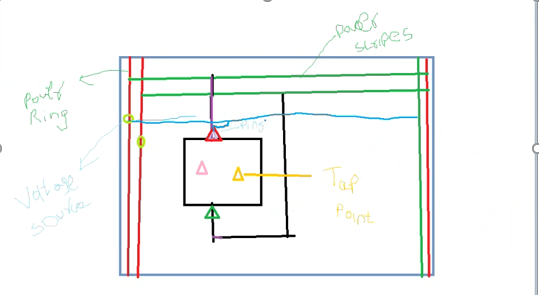

Day 1 27/02/2023: IR drop basics
1. The voltage reaching to the instance pin from voltage source
2. current
Current
Ptiavg
VDD net to instance PG pin (red traingle)
Tap current
??
3) RLRP
Green + purple = 10Ohm
Blue = 8ohm
IR drop : worst (10ohm)
RLRP:least(8ohm)
EFf R:?>
Questions
1. What the role of PGV in rail analysis?
Ans: Views from PGV and to sync the current from ptiavg files
2. What the role of tap points and tap current?
3. How the tool is picking current source? Which are reported in lof file (circuit profile)?